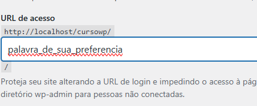
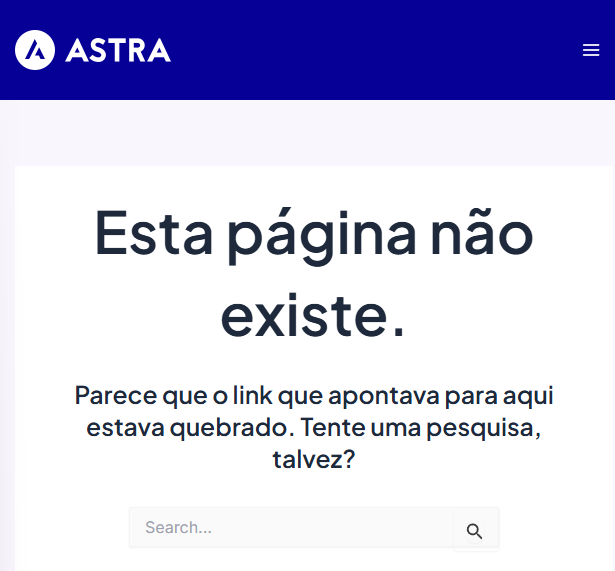
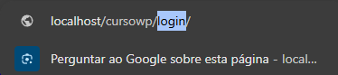
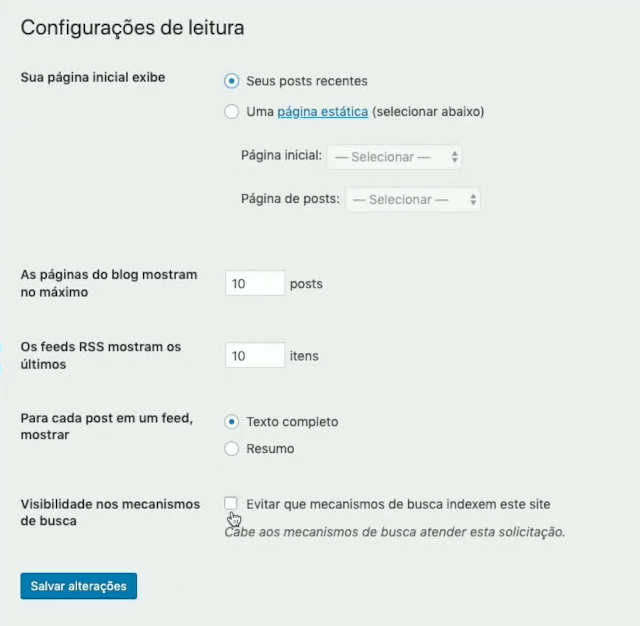
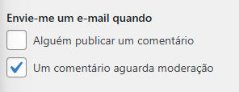
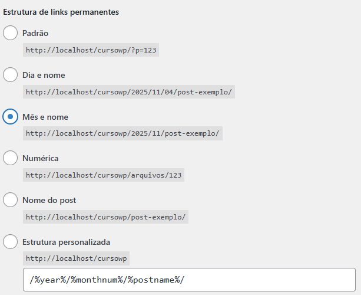

HTTPS: quando usar
Para mudar de http para https no WordPress:
-
Faça backup
Antes de tudo, faça um backup completo (arquivos + banco).
-
Atualize as URLs em Configurações → Geral
Altere “URL do WordPress” e “URL do site”.
-
Instale plugin de SSL (se necessário)
Ex.: Really Simple SSL.
-
Verifique links internos
Garanta que tudo está carregando via https (sem conteúdo misto).
-
Teste o site
Revise páginas, admin, formulários e recursos (imagens, scripts, CSS).
Dúvidas sobre HTTPS
Pergunte ao provedor de hospedagem se há suporte a HTTPS/SSL e como ativar. (Em boa hospedagem, isso costuma ser simples.)
E-mail de notificação
Verifique se a hospedagem oferece e-mail profissional (ex.: contato@seudominio.com). Em geral, é melhor usar e-mail profissional para notificações e formulários.
WPS Hide Login (segurança)
Para reduzir ataques automáticos em páginas de login:
-
Ative o plugin
Instale/ative o WPS Hide Login.
-
Abra as configurações
Vá em Configurações → WPS Hide Login.
-
Troque a URL de login
Mude o campo de “login” para uma palavra de sua preferência e salve.

-
Teste
Ao acessar
http://localhost/cursowp/login/deve aparecer 404.
-
Guarde a nova URL
Use a nova URL para acessar o painel e mantenha isso anotado de forma segura.

Escrita
Em Configurações → Escrita, você define padrões de postagem. Se seu site tem muita publicação (ex.: notícias), vale organizar categorias.
Dica do professor: para publicar via e-mail, use o app/recursos oficiais quando fizer sentido para o projeto.
Leitura
Em Configurações → Leitura:
- Para sites institucionais, geralmente use Uma página estática como Home.
- Posts podem ficar em uma página específica (ex.: “Blog/Notícias”).

Discussão
Em Configurações → Discussão, ajuste comentários e notificações.
Se o projeto não usa comentários, desmarcar notificações reduz ruído.

Mídia
Em Configurações → Mídia, você define tamanhos padrão de imagens.
Permalinks
Em Configurações → Links Permanentes, escolha um formato amigável. Uma opção comum é “Mês e nome” (ou “Nome do post” dependendo do projeto).

Imsanity (otimização de imagens)
No Imsanity Settings, você pode otimizar tamanho/qualidade. Exemplo: alterar a qualidade JPG para 72.